Simulado 1
No meio do caminho
Para medir onde você está em cada disciplina e ajustar o estudo enquanto ainda dá tempo.
30 dias após a compra

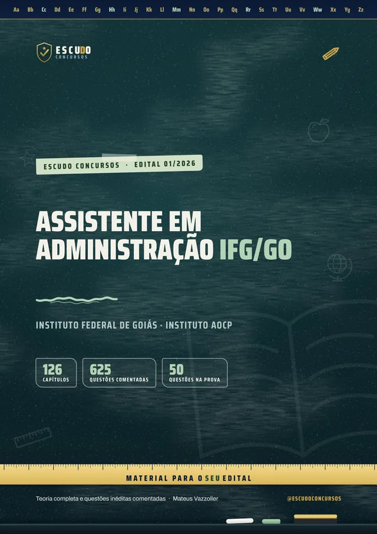
625questões
comentadas
São 50 questões da AOCP, e os Conhecimentos Específicos valem 60% da nota. O seu material cobre as cinco disciplinas do edital, com as leis dos Institutos Federais que só esta prova cobra? Curso feito a partir do Edital nº 1/2026 do IFG, item por item, com questões de A a E no padrão da AOCP e gabarito comentado.
De acordo com o Edital nº 1/2026 · Instituto AOCP
de R$ 47 por 21% OFF
R$37
com o cupom IFG37 até 23/12/2026. Pelo botão, o cupom já vai preenchido.
R$47
Curso completo, com acesso imediato.
Kit completo por R$ 79,90 R$ 102,60 separado
Grátis, sem cadastro para começar
20 questões no estilo da banca, com nota na hora por disciplina. O gabarito comentado sai depois de informar o e-mail.
Resposta rápida
Assistente em Administração do IFG, nível D, 40 horas semanais, R$ 3.181,39 e taxa de R$ 160,00. Banca: Instituto AOCP, Edital nº 1/2026 (DOU de 16/11/2026). 14 vagas em 7 unidades de Goiás. Inscrições das 9h de 24/11/2026 às 23h59 de 23/12/2026. Prova objetiva única em 14/02/2027: 50 questões de A a E, 100 pontos, 4 horas. É preciso 60 pontos e o mínimo de cada disciplina (12 em Português, 5 em Legislação, 2 em Raciocínio Lógico, 2 em Informática e 39 em Conhecimentos Específicos).
Leia o guia completo do concurso: vagas, salário, prova e o que cai
O concurso
O Edital de Abertura nº 1/2026 do Instituto Federal de Educação, Ciência e Tecnologia de Goiás (IFG), publicado no Diário Oficial da União de 16/11/2026, abre o concurso para Técnico-Administrativo em Educação. Para Assistente em Administração (cargo 301, nível D, 40 horas semanais) são 14 vagas em 7 unidades, com remuneração inicial de R$ 3.181,39, mais auxílio-alimentação de R$ 1.192,00. O cargo exige ensino médio profissionalizante em Administração ou ensino médio completo com 12 meses de experiência. As inscrições vão de 24 de novembro a 23 de dezembro de 2026, com taxa de R$ 160,00.
A prova do Instituto AOCP é em 14 de fevereiro de 2027: 50 questões de 5 alternativas, de (A) a (E), em 4 horas. Não há redação. A nota vai de 0 a 100, e cada disciplina tem peso e pontuação mínima próprios.
Para não ser eliminado é preciso 60 pontos e também o mínimo de cada disciplina: 12 em Português, 5 em Legislação, 2 em Raciocínio Lógico, 2 em Informática e 39 em Específicos. Os cinco mínimos somam exatamente 60: quem zera uma disciplina não compensa em outra.
| Disciplina | Questões | Peso | Mínimo |
|---|---|---|---|
| Língua Portuguesa | 10 | 2 | 12 pontos |
| Legislação | 10 | 1 | 5 pontos |
| Raciocínio Lógico e Matemática | 5 | 1 | 2 pontos |
| Informática | 5 | 1 | 2 pontos |
| Conhecimentos Específicos do cargo | 20 | 3 | 39 pontos |
| Total: 100 pontos, mínimo de 60 na prova | 50 | 60 pontos |
O formato
Você estuda lendo, no seu ritmo, pela área de membros da Hotmart ou com os arquivos baixados. O curso foi feito a partir do Edital nº 1/2026, item por item, na ordem do Anexo III para Assistente em Administração, com a legislação vigente na data de publicação do edital de abertura (16/11/2026), como o item 1.5.3 manda.
Páginas reais do PDF
Toque numa página para ver em tamanho maior.
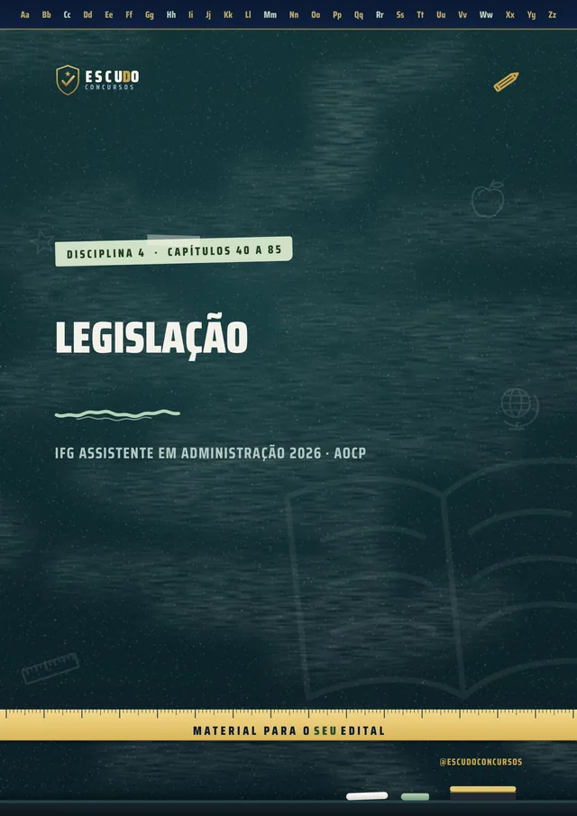
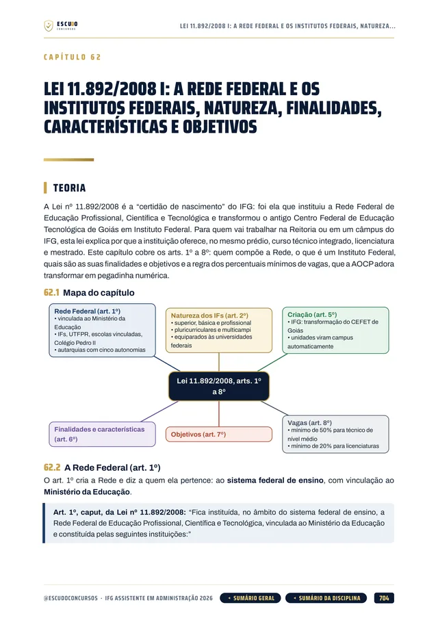
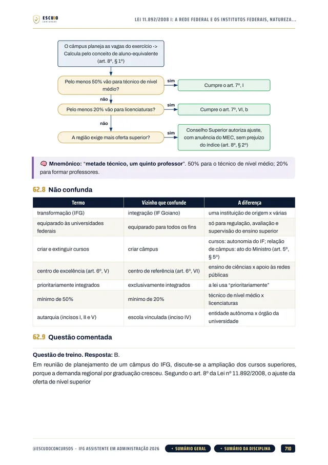
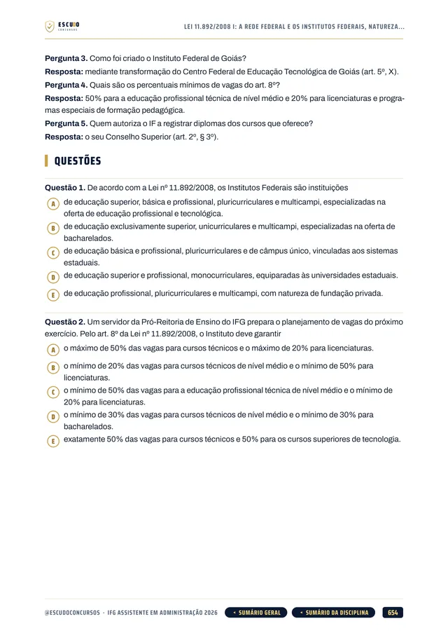
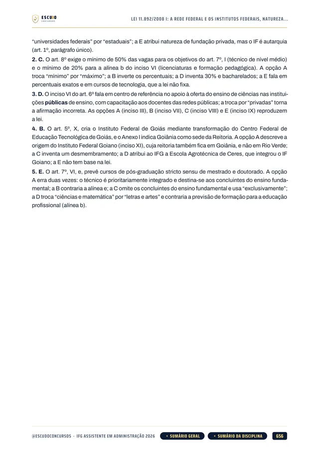
100% em PDF · Garantia de 7 dias · Pagamento pela Hotmart
Leia uma amostra grátis: a apresentação e 10 questões comentadas
O que você recebe
Curso em PDF organizado em módulos pelas disciplinas do edital, com 1.183 páginas no padrão visual ESCUDO, para ler no computador, no tablet, no celular ou no app da Hotmart. Não há videoaulas.
126 capítulos cobrindo as cinco disciplinas da prova: Língua Portuguesa (22 capítulos), Raciocínio Lógico e Matemática (8), Informática (8), Legislação (46) e Conhecimentos Específicos (41), mais um capítulo de abertura sobre a prova e o plano de estudo.
625 questões inéditas com 5 alternativas, de (A) a (E), no padrão da AOCP, todas com gabarito comentado: por que a correta está correta e onde está o erro de cada uma das outras.
Legislação em 46 capítulos: Administração Pública, educação, cultura e ciência na Constituição, Lei 8.112/1990, Decreto 1.171/1994, LDB, Lei 11.892/2008 (os Institutos Federais), Lei 11.091/2005 (a carreira dos técnico-administrativos), LAI, LGPD, Lei 14.133/2021, Lei 9.784/1999 e Lei 8.429/1992, na redação vigente em 16/11/2026.
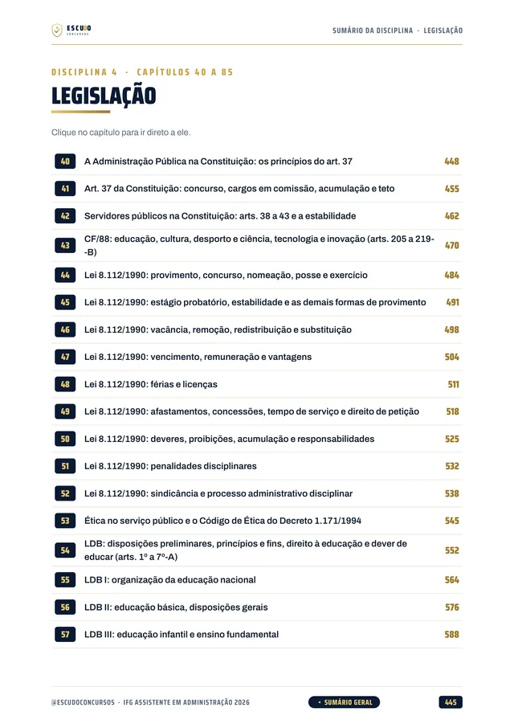
Os Conhecimentos Específicos, que valem 60% da nota, em 41 capítulos: redação oficial, Arquivologia, comportamento organizacional, ética, gestão de pessoas, materiais, patrimônio e logística, execução orçamentária, balanço patrimonial e DRE.
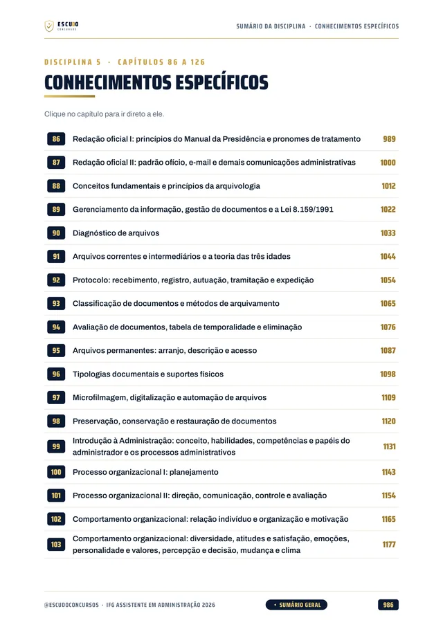
Teoria com recursos para memorizar: mapa de cada capítulo, lei transcrita onde o número ou a palavra decide a questão, quadros de "pegadinha" e "não confunda", revisão relâmpago e teste de memória.
Navegação clicável: do sumário você vai direto ao capítulo, e volta pelo botão do rodapé.
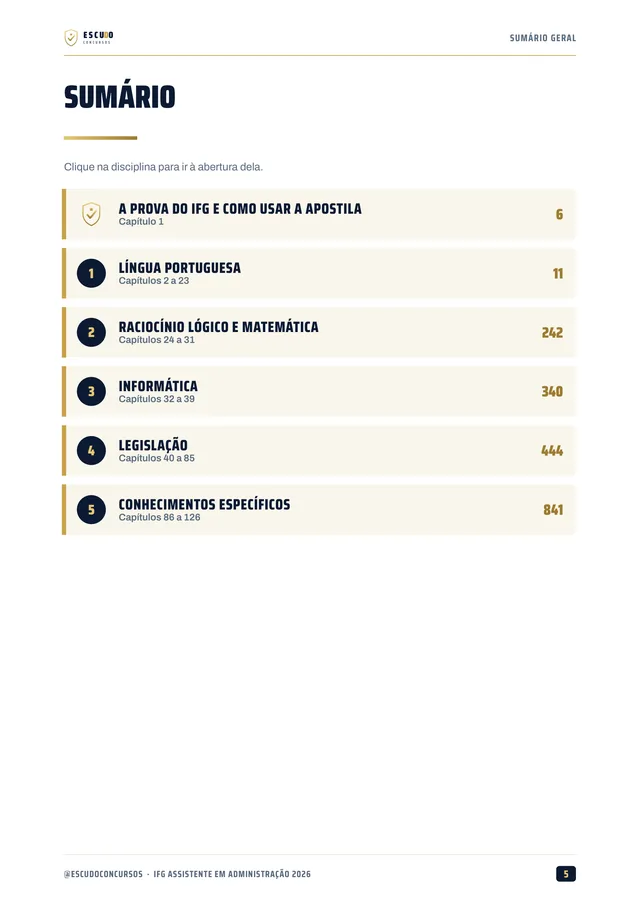
2 simulados inéditos no formato exato da prova (50 questões de A a E, com os pesos do edital), cada um com caderno de comentários. O Simulado 2 é liberado em 07/02/2027, na semana anterior à prova, para o seu último teste.
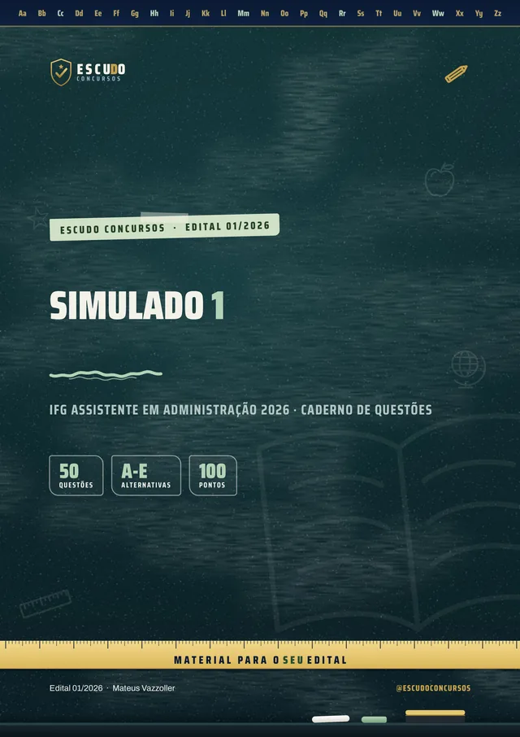
Área de membros
| Módulo | Conteúdo | Liberação |
|---|---|---|
| M0 Comece aqui | Apresentação + capítulo 001 (como é a prova e como usar o curso). Bônus: PDF completo para baixar e imprimir | Na compra; o PDF completo no 8º dia |
| M1 Língua Portuguesa | Capítulos 002 a 023 | Na compra |
| M2 Raciocínio Lógico e Matemática | Capítulos 024 a 031 | Na compra |
| M3 Informática | Capítulos 032 a 039 | Na compra |
| M4 Legislação | Capítulos 040 a 085 | Na compra |
| M5 Redação Oficial e Arquivologia | Capítulos 086 a 098 | Na compra |
| M6 Administração Geral e Comportamento | Capítulos 099 a 111 | Na compra |
| M7 Gestão de Pessoas | Capítulos 112 a 115 | Na compra |
| M8 Materiais, Patrimônio e Logística | Capítulos 116 a 122 | Na compra |
| M9 Despesa Pública, Finanças e Contabilidade | Capítulos 123 a 126 | Na compra |
| M10 Simulado 1 | 50 questões, caderno de comentários | 30 dias após a compra |
| M11 Simulado 2 | 50 questões, caderno de comentários | 07/02/2027 (7 dias antes da prova) |
Treino no formato da prova
Cada simulado tem 50 questões de A a E, na ordem e nos pesos do edital (Português 10, Legislação 10, Raciocínio Lógico 5, Informática 5 e Específicos 20), com caderno de comentários.
Simulado 1
Para medir onde você está em cada disciplina e ajustar o estudo enquanto ainda dá tempo.
30 dias após a compra
Simulado 2
Liberado na semana anterior à prova de 14/02/2027.
07/02/2027
Para quem é
Para quem vai prestar Assistente em Administração do IFG em 14/02/2027 e quer estudar pelo programa do edital, com a Legislação dos Institutos Federais e os Conhecimentos Específicos, que valem 60% da nota, cobertos por inteiro.
Você tem 7 dias de garantia pela Hotmart. Se não for o que você esperava, pede o reembolso pela própria Hotmart, dentro do prazo.
Sem surpresa na área de membros
Na compra: todas as disciplinas em PDF, uma por módulo, com a teoria e as questões comentadas. É o curso inteiro, para começar a estudar no mesmo dia.
8 dias após a compra: o PDF completo para imprimir. É o mesmo conteúdo dos módulos num arquivo só, liberado depois da garantia de 7 dias.
Simulado 1: 30 dias após a compra, para medir onde você está no meio da preparação.
Simulado 2: em 07/02/2027, 7 dias antes da prova, para o último teste.
O PDF completo e os simulados aparecem bloqueados na área de membros até a data de cada um: não é conteúdo faltando, é a liberação programada.
Dúvidas
Não. É um curso 100% em PDF: teoria, questões comentadas e simulados para ler e resolver.
O acesso é imediato depois da confirmação do pagamento, pela área de membros da Hotmart (web ou app). O PDF completo para baixar e imprimir é liberado no 8º dia.
O Simulado 1 é liberado 30 dias após a compra. O Simulado 2 é liberado em 07/02/2027, uma semana antes da prova.
A prova vale 100 pontos: Português (10 questões, peso 2), Legislação (10, peso 1), Raciocínio Lógico e Matemática (5, peso 1), Informática (5, peso 1) e Conhecimentos Específicos (20, peso 3). É preciso 60 pontos e o mínimo de cada disciplina (12, 5, 2, 2 e 39), que somam exatamente 60. O capítulo 001 explica a estratégia.
Não. A prova objetiva tem 50 questões e é a única etapa de conhecimentos. O curso traz Português para as questões e a redação oficial como disciplina dos Específicos.
Sim. O edital manda cobrar a legislação vigente na data de publicação do edital de abertura, 16/11/2026, e os capítulos seguem essa data, incluindo as alterações recentes das Leis 11.892/2008 e 11.091/2005.
Sim. O Anexo III cobra as duas para todos os cargos de nível médio, e o curso tem 8 capítulos de cada.
Não como curso completo. Este curso é para Assistente em Administração (código 301). Os outros cargos têm Conhecimentos Específicos próprios, embora as disciplinas comuns sejam as mesmas.
Não. As 625 questões de treino e as dos simulados são inéditas, escritas no padrão da AOCP a partir do conteúdo programático do edital.
Você tem 7 dias de garantia pela Hotmart. Se não for o que você esperava, pede o reembolso.
IFG/GO 2026 · Assistente em Administração
de R$ 47 por 21% OFF
R$37
com o cupom IFG37 até 23/12/2026.
R$47
Curso completo, com acesso imediato.
Material para o SEU edital. ESCUDO Concursos.
Continue estudando
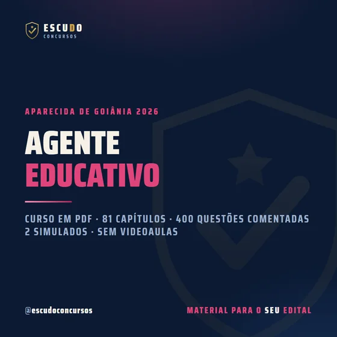
Aparecida de Goiânia 2026 · Instituto Verbena/UFGAgente Educativo de Aparecida de Goiânia Aparecida de Goiânia 2026 · Instituto Verbena/UFGProfessor PE-I Pedagogia de Aparecida de Goiânia
Aparecida de Goiânia 2026 · Instituto Verbena/UFGProfessor PE-I Pedagogia de Aparecida de Goiânia SEMED Porto Velho/RO 2026 · IBGPProfessor Séries Iniciais de Porto Velho
SEMED Porto Velho/RO 2026 · IBGPProfessor Séries Iniciais de Porto Velho Professor de Língua Portuguesa SEDUC/MA 2026 · FCCProfessor de Língua Portuguesa da SEDUC/MA: a prova completa
Professor de Língua Portuguesa SEDUC/MA 2026 · FCCProfessor de Língua Portuguesa da SEDUC/MA: a prova completaGuia do concurso: edital, vagas e o que cai · Ver todos: concursos de educação · Concursos em Goiás